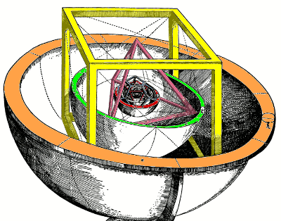
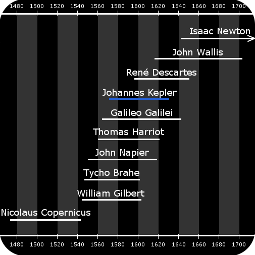
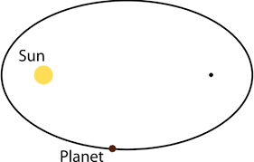

Johannes Kepler is a German astronomer who discovered 3 laws of planetary motion. He was born in 1571 and lived until 1630.
Kepler has great leadership and inspires many people to follow him. In addition, he also has the ability to run many enterprises and is very persistant.
Kepler was vulnerable to diseases and his hands were crippled and his eyes were impaired from smallpox. Astonishingly, he was still able to solve any problem involving numbers.
Kepler, like Copernicus and Galileo, believed in the heliocentric model. But from his observations, he concluded that the planets (at the time were Mercury, Venus, Mars, Jupiter and Saturn) orbit the sun in ellipses instead of perfect circles, with the sun at one focus.
Because he saw the planets orbit faster when they are closest to the sun, he knew the sun must influence the planets. But kepler needed more data to justify his conclusions.
Then, he found Tycho Brahe, who had an enormous collection of data, all from observations made without a telescope. But Brahe didn’t give Kepler access to all his data.
Kepler didn't access to all of Brahe's data until his death in 1601, which he used to prove what is now called his first law of motion while identifying his second: The law of areas, where te area covered by a planet in a given amount of time is the same regardless of where the planet is in it's orbit.
His third law states that the time taken to complete 1 orbit squared is proportional to it's cubed distance from the Sun.
Many of Kepler's observations were a result of him trying to prove that the distances between the Sun and the planets are linked to half-spheres and the five platonic solids. Although this false, it lead him to many discoveries that revolutionised astronomy.
Kepler believed that the distances from the planets to the sun is linked to the five platonic solidsA timeline of great scientistsKepler's first law of planetary motion